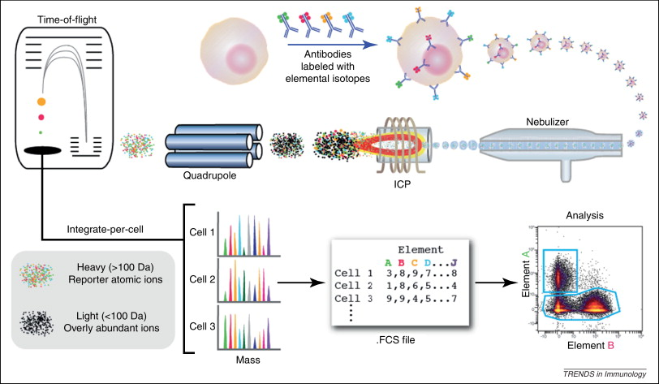
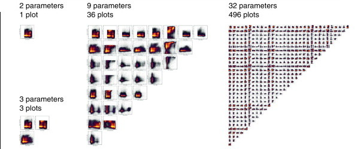
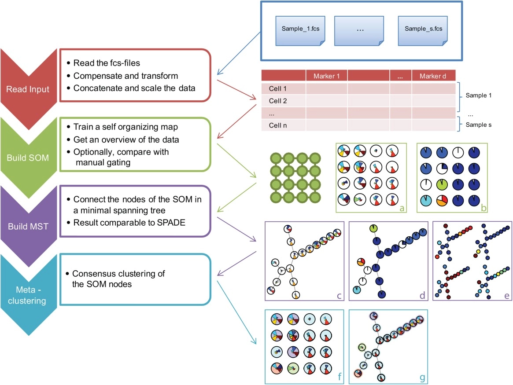
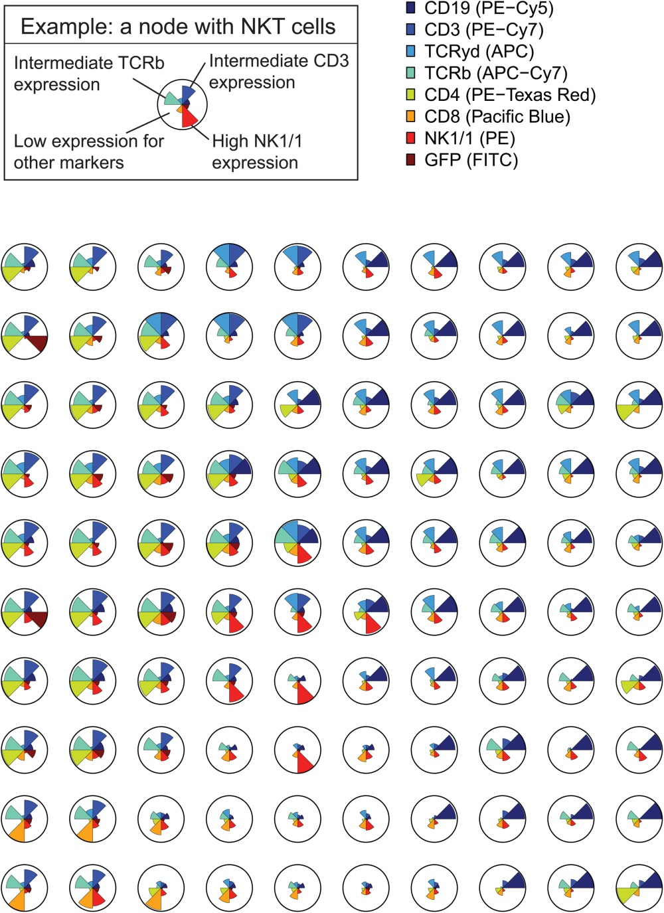
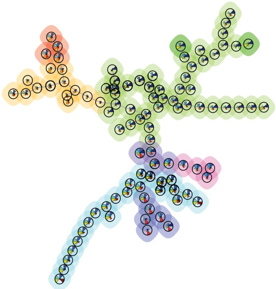
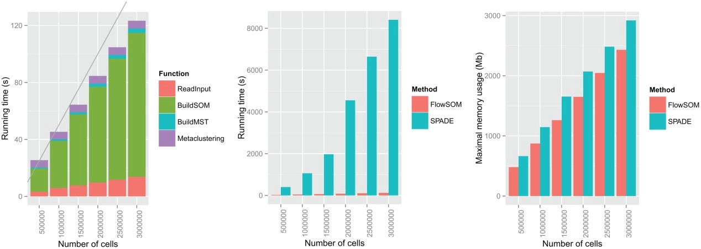

A high-throughput form of flow cytometry.

Figure 2: Bendall et al. 2012

Figure 3: Bendall et al. 2012
allows both clustering and visualisation



A tunable parameter is the number of clusters; these clusters can then be clustered.
How does this compare to traditional gating?
Cluster with
Used the FlowCAP I dataset, comprising:
Also one in-house dataset, and another mass cytometry dataset.
FlowSOM works almost as well as manual annotationFlowSOM is slightly better than SPADE| Dataset | SPADE purity |
FlowSOM purity |
FlowSOM F-measure |
|---|---|---|---|
| Diffuse large B-cell lymphoma | 0.9367 | 0.9494 | 0.8370 |
| Graft versus host disease | 0.9335 | 0.9439 | 0.8546 |
| Hematopoietic stem cell transplant | 0.9787 | 0.9759 | 0.7449 |
| Normal donor | 0.8173 | 0.8228 | 0.6775 |
| Symptomatic west nile virus | 0.9102 | 0.9234 | 0.8292 |
FlowSOM is faster to run than SPADE
FlowSOM allows for fast automated gating with low memory usage and permits
visualisation of these clusters.
It is (apparently) superior to SPADE.
FlowSOM was optimised for a particular dataset (FlowCAP I).Weber et al. 2016 examined multiple packages with several mass cytometry datasets, reporting F1 scores and runtimes.
FlowSOM fairly fast – 2 minutes on dataset with 8.4e5 cells.